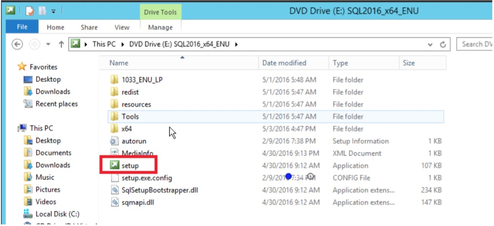
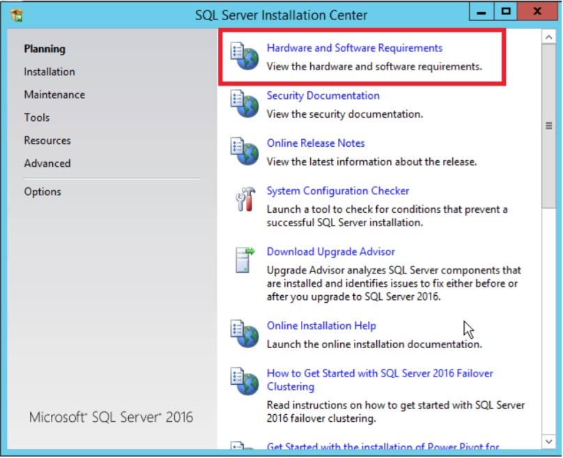
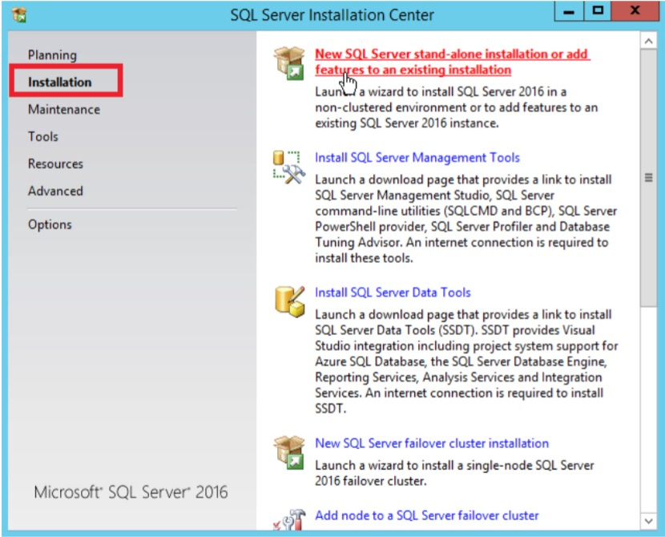
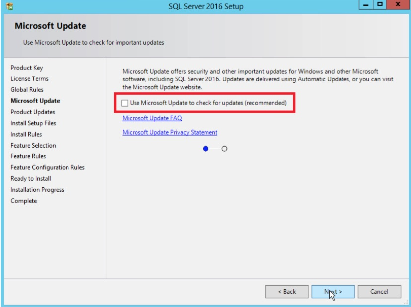
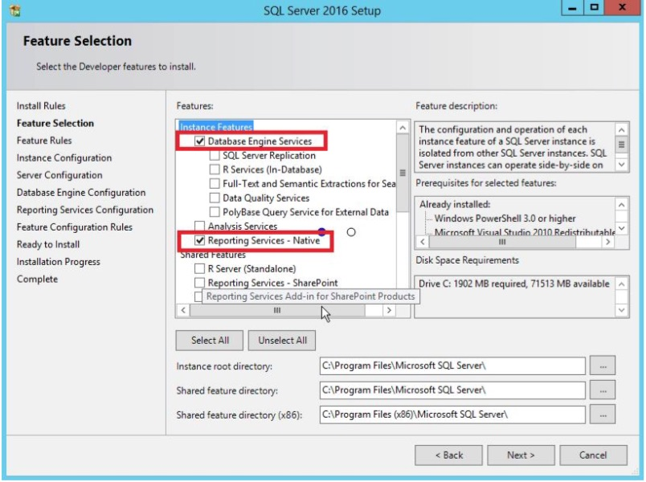
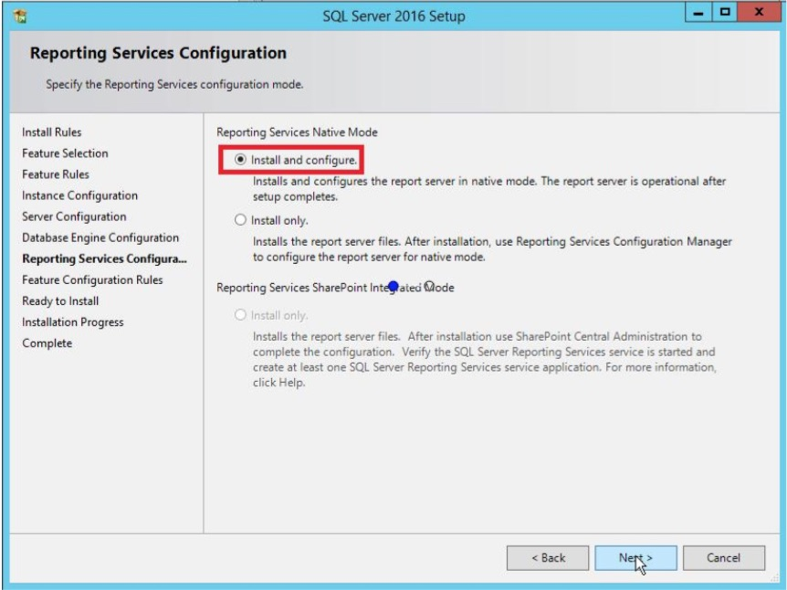

SQL Server Installation
Installation of SQL Server 2016 Developer Edition
These instructions are meant for learning SQL Server, not for a production installation.
- This version is available for free when you sign up for Visual Studio Dev Essentials. Once signed up for Dev Essentials, download SQL Server 2016 Dev Edition. There is also a version with Service Pack 1. I had problems getting the file to work, so I recommend starting with the original and applying SP1 as a second step.
- The SQL Server Developer Edition file is an ISO file. Double-click the file top open it. Double-click the Setup Icon.

- The SQL Server Installation Center opens. You can click the Hardware and Software Requirements link to make sure that your system will support SQL Server 2016.

- Click Installation on the left and then click New SQL Server stand-alone installation or add features to an existing installation.

- This will kick off the installation wizard. On the Product Key page, make sure that Developer edition is selected and click Next.

- On the License Terms page, select I accept the license terms and click next.

- On the Microsoft Update page, check Use Microsoft Update to check for updates (recommended) if you want updates to be applied automatically and click Next.

- On the Product Updates page, select Include SQL Server product updates and allow any critical updates to be applied. Click Next when done.

- On the Feature Selection page, check Database Engine Services and Reporting Services – Native. If there are other features that you are interested in, such as Full Text, you may want to select those as well. Click Next.

- On the Instance Configuration, you will provide an instance name. This is required when multiple instances of SQL Server are installed. MSSQLSERVER is the default. If this must be a named instance, write down the instance name.

- On the Server Configuration page, select Grant Perform Volume Maintenance Task privilege to SQL Server Database Engine Service and click Next.

- On the Database Engine Configuration page, click Add Current User to add your account to the SQL Server as an administrator. Change to Mixed Mode and fill in a password. Click Next.

- Make sure that Install and Configure is selected and click Next.

- On the Ready to Install page, click Install.

- Once the installation is complete, restart if necessary.